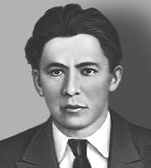

Шмидт В.В.
Шмидт Василий Владимирович
Профсоюзный и государственный деятель.
29.12.1886 – 29.07.1938
Родился в Петербурге в семье рабочих. Окончил 4-х классное городское училище. С 1905 г. – токарь в железнодорожных мастерских. Вступил в РСДРП в 1905 г., большевик. Участник Революции 1905 – 1907 гг. (Петербург). С 1907 г. находился в эмиграции в Германии. В 1911–1914 гг. – слесарь механической мастерской Петербургского арсенала, одновременно секретарь Союза металлистов Выборгского района Петербурга, затем секретарь Союза металлистов Петербурга. Неоднократно арестовывался. С февраля 1917 г. – секретарь Петроградского комитета РСДРП(б) и Центрального совета профсоюзов Петрограда, член Петроградского Военно-революционного комитета. Один из редакторов большевистского журнала «Металлист». Делегат 7-й Всероссийской конференции РСДРП (б). С ноября 1917 г. по октябрь1918 г. — заместитель Наркома труда РСФСР, 1918—1928 гг. — Нарком труда РСФСР (с 1923 г.– Нарком труда СССР), одновременно член Президиума и секретарь Всесоюзного центрального совета профессиональных союзов. 1928—1930 гг. — заместитель Председателя Совета народных комиссаров СССР. 1930—1931 гг. — заместитель Наркома земледелия СССР. В 1931—1933 гг. – Главный арбитр при Совете народных комиссаров СССР. С 1933 г. на хозяйственной работе в Приморье. Арестован 5 января 1937 года. Осужден 3 июня 1937 года к 10 годам тюремного заключения за принадлежность к руководству антисоветской организации правых, 28 января 1938 г. приговорен к высшей мере и расстрелян в тот же день. Реабилитирован 30 июля 1957 г.
| Шверник Н.М.< Предыдущая | Следующая >Эттли К. |
|---|